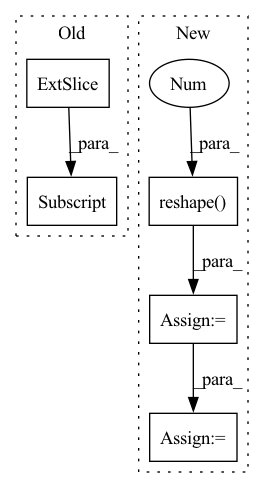

Pattern ID :33364
Before Change
B, N, _ = x.shape
t = val_batch["t"].float()
node_features, edge_index, edge_features = self._build_graph(u[:,:,:self.time_slice], x, t[:,:self.time_slice] )
target = u[:,:,self.time_slice:]
T_out = target.shape[-1]
u_hat = []After Change
u_hat = []
for i in range(T_out//self.time_window):
y_hat = self.forward(graph, x[0,-1], t[0,-1], dt)
y_hat = y_hat.reshape( B, N, -1 ) .permute(0,2,1)
u_hat.append(y_hat)
graph = self._build_graph(
y_hat,
t,
x,In pattern: SUPERPATTERN
Frequency: 7
Non-data size: 5
Instances Fragment ID: 96097594
Project Name: jaggbow/magnet
Commit Name: b9ec29a45c27a8d37c08fb091ec1cd92c00dee3b
Time: 2022-10-10
Author: oussama.boussif@student.ecp.fr
File Name: models/mpnn.py
M Class Name: MPNN
N Class Name: MPNN
M Method Name: validation_step(3)
N Method Name: validation_step(3)
M Parent Class: pl.LightningModule
N Parent Class: pl.LightningModule
M File Name: models/mpnn.py
N File Name: models/mpnn.py
M Start Line: 277
M End Line: 294
N Start Line: 300
N End Line: 325
Before Change
ctrd_excls = torch.stack([
torch.cat([ctrds[:s, :],
mean_excls[s, u, :] .unsqueeze(0),
ctrds[s+1:, :]])
for s in range(n_spkr) for u in range(n_uttr)
]).view_as(dvec_expns)After Change
dvec_rolls = torch.cat([dvecs[:, 1:, :], dvecs[:, :-1, :]], dim=1)
dvec_excls = dvec_rolls.unfold(1, n_uttr-1, 1)
mean_excls = dvec_excls.mean(dim=-1).reshape(-1 , d_embd)
indices = _indices_to_replace(n_spkr, n_uttr)
ctrd_excls = ctrd_expns.index_copy(0, indices, mean_excls)
ctrd_excls = ctrd_excls.view_as(dvec_expns)
return F.cosine_similarity(dvec_expns, ctrd_excls, 3, 1e-6)
Fragment ID: 96097578
Project Name: yistlin/dvector
Commit Name: 1051873ad612f253287d1afaaac2df5571a42cdb
Time: 2020-04-05
Author: yishen992@gmail.com
File Name: modules/ge2e.py
M Class Name: GE2ELoss
N Class Name: GE2ELoss
M Method Name: cosine_similarity(2)
N Method Name: cosine_similarity(2)
M Parent Class: nn.Module
N Parent Class: nn.Module
M File Name: modules/ge2e.py
N File Name: modules/ge2e.py
M Start Line: 39
M End Line: 54
N Start Line: 41
N End Line: 53
Before Change
for idx, (class_boxes, class_probs) in enumerate(zip(batch_classes_boxes, batch_classes_probs)):
if class_probs[:, -1].max() > 0.5:
batch_classes.append(idx + 1)
batch_scores.append(class_probs[:, -1] .max().detach().cpu().numpy())
batch_boxes.append(class_boxes[class_probs[:, -1].argmax()][None].detach().cpu().numpy())
if query_info is not None:After Change
bs, *_ = out["pred_logits"].shape
// Get probabilities from output logits and select query with highest prob
pred_probs = out["pred_logits"].sigmoid().squeeze().reshape( bs, 20, 27 )
pred_boxes = out["pred_boxes"].reshape(bs, 20, 27, -1)
pred_query_ids = pred_probs.argmax(dim=-1)
// Adjust format to fit metric
boxes = []
classes = []
scores = []
for batch in range(bs):
batch_boxes = []
batch_classes = []
batch_scores = []
for class_ in range(20):
valid_id = pred_query_ids[batch, class_]
batch_boxes.append(pred_boxes[batch, class_, valid_id][None].detach().cpu().numpy())
batch_scores.append(pred_probs[batch, class_, valid_id].detach().cpu().numpy())
batch_classes.append(class_ + 1) Fragment ID: 96097595
Project Name: bwittmann/transoar
Commit Name: 09f57bf9bd1146b57db0cce80a0901defe5e5d63
Time: 2022-02-15
Author: bastian.wittmann@tum.de
File Name: transoar/inference.py
M Class Name: AnonimousClass
N Class Name: AnonimousClass
M Method Name: inference(2)
N Method Name: inference(2)
M Parent Class:
N Parent Class:
M File Name: transoar/inference.py
N File Name: transoar/inference.py
M Start Line: 9
M End Line: 36
N Start Line: 6
N End Line: 34
Before Change
_output = self._model.pool(feats)
_output = self._model.flatten(_output)
_output = self._model.classifier(_output)
grad: torch.FloatTensor = list(torch.autograd.grad(_output[:, _class] , feats))[0] // (N,C,H,W)
feats.requires_grad_(False)
weights: torch.FloatTensor = grad.mean(axis=-1, keepdim=True).mean(axis=-1, keepdim=True) // (N,C,1,1)After Change
heatmap = cv2.resize(heatmap, dsize=_input.shape[-2:], interpolation=cv2.INTER_CUBIC)
if len(heatmap.shape) == 2:
heatmap = heatmap.reshape( heatmap.shape[0], heatmap.shape[1], 1 )
heatmap = heatmap.transpose(2, 0, 1).astype(float) / 255 // (N, H, W)
return heatmap
def get_saliency_map(self, _input: torch.FloatTensor, _class: List[int]) -> torch.Tensor: Fragment ID: 96097597
Project Name: ain-soph/trojanzoo
Commit Name: 2bf7c2a2e8acba2592ee17d60d1a59b7bd1bbfe5
Time: 2020-11-24
Author: ain-soph@live.com
File Name: trojanzoo/model/imagemodel.py
M Class Name: ImageModel
N Class Name: ImageModel
M Method Name: grad_cam(3)
N Method Name: grad_cam(3)
M Parent Class: Model
N Parent Class: Model
M File Name: trojanzoo/model/imagemodel.py
N File Name: trojanzoo/model/imagemodel.py
M Start Line: 206
M End Line: 222
N Start Line: 190
N End Line: 212
Before Change
generated_noise = generated_noise.int()
bright_regions = img.sum(1) > brightness_threshold * img.shape[1]
for ch in range(img.shape[1]):
gnch = generated_noise[:, ch]
gnch[bright_regions] = gnch[bright_regions] * -1
generated_noise[:, ch] = gnch
anom = (anom.int() + generated_noise).clamp(0, 255).byte()After Change
// invert noise if difference of malformed and original is less than threshold and inverted difference is higher
diff = ((anom.int() + generated_noise).clamp(0, 255) - anom.int())
diff = diff.reshape( anom.size(0), -1 ) .sum(1).float().div(np.prod(anom.shape)).abs()
diffi = ((anom.int() - generated_noise).clamp(0, 255) - anom.int())
diffi = diffi.reshape(anom.size(0), -1).sum(1).float().div(np.prod(anom.shape)).abs()
inv = [i for i, (d, di) in enumerate(zip(diff, diffi)) if d < invert_threshold and di > d]
generated_noise[inv] = -generated_noise[inv]
anom = (anom.int() + generated_noise).clamp(0, 255).byte()
Fragment ID: 96097581
Project Name: liznerski/fcdd
Commit Name: d110aa8b141dc13f47156da913a6b4f9d64ddc74
Time: 2020-10-12
Author: p_liznersk13@cs.uni-kl.de
File Name: python/fcdd/datasets/online_superviser.py
M Class Name: OnlineSuperviser
N Class Name: OnlineSuperviser
M Method Name: __malformed_normal(8)
N Method Name: __malformed_normal(8)
M Parent Class: ImgGTTargetTransform
N Parent Class: ImgGTTargetTransform
M File Name: python/fcdd/datasets/online_superviser.py
N File Name: python/fcdd/datasets/online_superviser.py
M Start Line: 139
M End Line: 146
N Start Line: 143
N End Line: 151
Before Change
// un-blocking the predicted wavs for stoi and pesq evaluation
num_blocks, wav_size = data_sizes
clean_wavs = clean_wavs_orig
predict_wavs = predict_wavs.reshape(
clean_wavs.shape[0], num_blocks * 16384
)[:, : clean_wavs.shape[1]]
if stage != sb.Stage.TRAIN:
// Evaluate speech quality/intelligibility
self.stoi_metric.append(After Change
// Evaluate speech quality/intelligibility
predict_wavs = predict_wavs.reshape(self.batch_current, -1)
clean_wavs = clean_wavs.reshape( self.batch_current, -1 )
predict_wavs = predict_wavs[:, 0 : self.original_len]
clean_wavs = clean_wavs[:, 0 : self.original_len]
self.stoi_metric.append(
batch.id, predict_wavs, clean_wavs, lens, reduction="batch" Fragment ID: 96097539
Project Name: speechbrain/speechbrain
Commit Name: c91d417913af7aef5b1cf8937fb9d14754b5daa4
Time: 2021-07-13
Author: mirco.ravanelli@gmail.com
File Name: recipes/Voicebank/enhance/SEGAN/train.py
M Class Name: SEBrain
N Class Name: SEBrain
M Method Name: compute_objectives_g3(8)
N Method Name: compute_objectives_g3(9)
M Parent Class: sb.Brain
N Parent Class: sb.Brain
M File Name: recipes/Voicebank/enhance/SEGAN/train.py
N File Name: recipes/Voicebank/enhance/SEGAN/train.py
M Start Line: 60
M End Line: 121
N Start Line: 71
N End Line: 128
Before Change
mask_value = max_neg_value(q)
mask = torch.zeros((b * h, buckets, buckets), device=device).bool()
i, j = torch.triu_indices(buckets, buckets)
mask[:, 0, :] = True
mask[:, i, j] = True
R.masked_fill_(mask, mask_value)
R = R.softmax(dim=-1)After Change
// add null key / value buckets at index 0
null_key_bucket = self.null_key[None, :, None, :, :].expand(b, -1, 1, bsz, -1).reshape(bh, 1, bsz, -1)
null_value_bucket = self.null_value[None, :, None, :, :].expand(b, -1, 1, bsz, -1).reshape( bh, 1 , bsz, -1)
b_k_r = torch.cat((null_key_bucket, b_k), dim=1)
b_v_r = torch.cat((null_value_bucket, b_v), dim=1)
// reorder buckets to buckets of the past
b_k_r = reorder_buckets(b_k_r, R)
b_v_r = reorder_buckets(b_v_r, R)
// and concatenate to original buckets themselves for local attention
b_k = torch.cat((b_k_r, b_k), dim=2) Fragment ID: 96097635
Project Name: lucidrains/sinkhorn-transformer
Commit Name: 02446a9900a155b2512af5839f071ea84d292deb
Time: 2020-04-09
Author: lucidrains@gmail.com
File Name: sinkhorn_transformer/sinkhorn_transformer.py
M Class Name: SinkhornCausalAttention
N Class Name: SinkhornCausalAttention
M Method Name: forward(4)
N Method Name: forward(4)
M Parent Class: nn.Module
N Parent Class: nn.Module
M File Name: sinkhorn_transformer/sinkhorn_transformer.py
N File Name: sinkhorn_transformer/sinkhorn_transformer.py
M Start Line: 287
M End Line: 329
N Start Line: 297
N End Line: 345